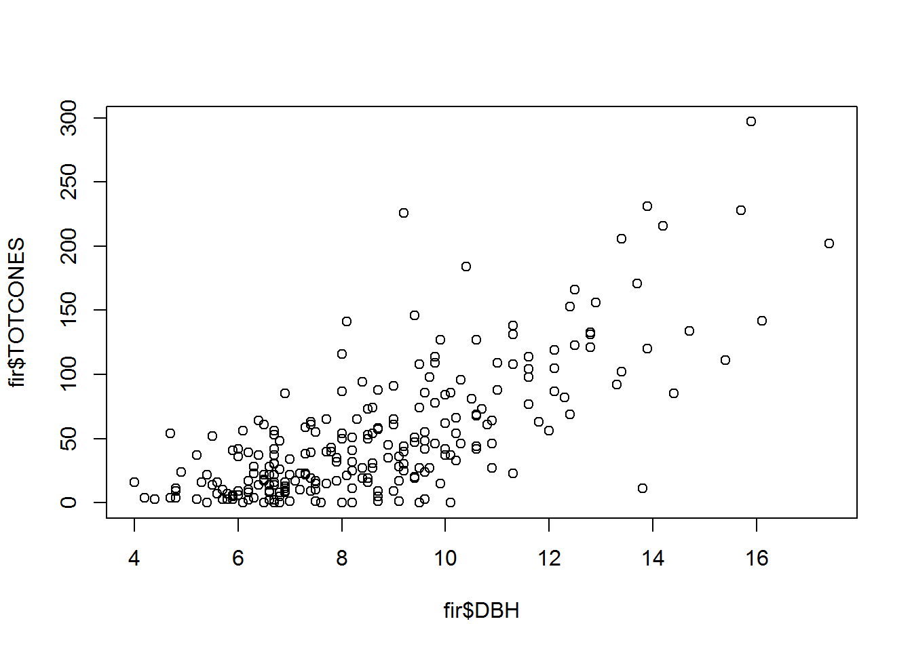
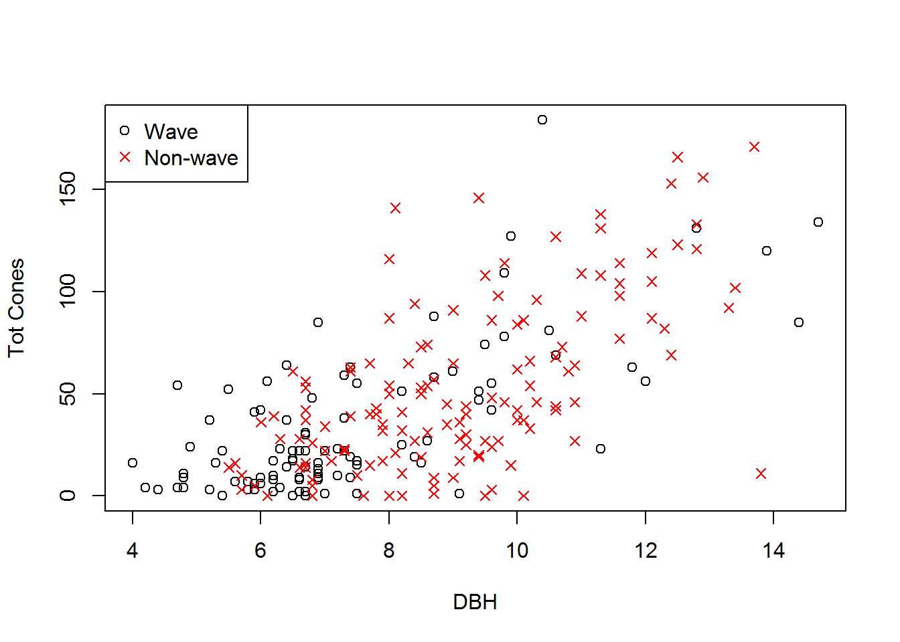
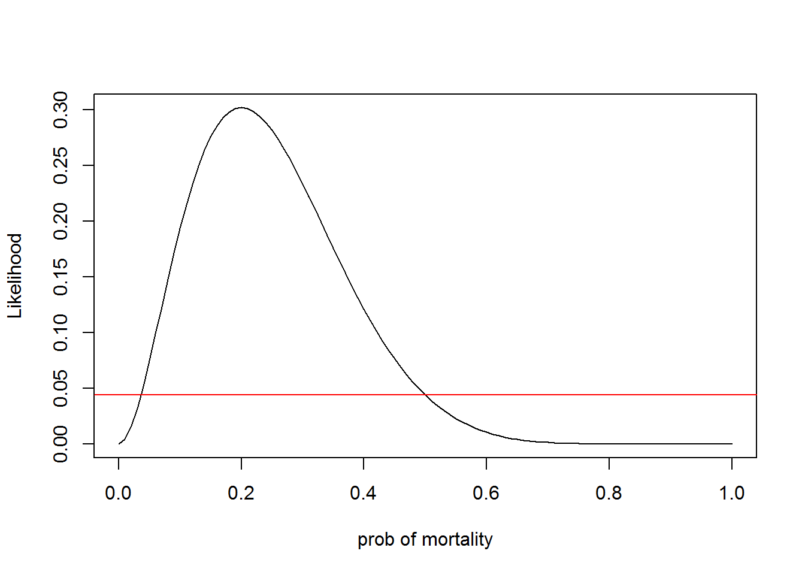

Model selection or model comparison is a very common problem in ecology- that is, we often have multiple competing hypotheses about how our data were generated.
If we can describe our data generating process explicitly as a set of deterministic and stochastic componenets, then we should be able to use Likelihood-based methods (e.g., LRT, AIC, BIC, Bayesian model selection) to infer which data generating model(s) could most plausibly have generated our observed data.
We will discuss several alternative approaches to model selection in ecology. However, all approaches follow a basic principle- that – all things equal, we should prefer the simpler model over any more complex alternative. This is known as the principle of parsimony.
Bolker uses a study of balsam fir in New York to illustrate model selection. Perhaps it’s time to move on from Myxomatosis!
Let’s load up the data first
library(emdbook)
data(FirDBHFec)
fir <- na.omit(FirDBHFec[,c("TOTCONES","DBH","WAVE_NON")])
fir$TOTCONES <- round(fir$TOTCONES)
head(fir)## TOTCONES DBH WAVE_NON
## 1 19 9.4 n
## 2 42 10.6 n
## 3 40 7.7 n
## 4 68 10.6 n
## 5 5 8.7 n
## 6 0 10.1 nWe can examine the fecundity (total cones) as a function of the tree size (DBH):
plot(fir$TOTCONES ~ fir$DBH)
One additional point of complexity in this data set- some trees were sampled from areas that have undergone periodic wave-like die-offs. Other trees were sampled from areas that have not undergone die-offs.
ndx <- fir$WAVE_NON=="w" # logical vector indicating which observations were from "wave" sites
plot(fir$TOTCONES[ndx] ~ fir$DBH[ndx],xlab="DBH",ylab="Tot Cones")
points(fir$DBH[!ndx],fir$TOTCONES[!ndx],pch=4,col="red")
legend("topleft",pch=c(1,4),col=c("black","red"),legend=c("Wave","Non-wave"),bty="n")
Let’s assume (following Bolker) that fecundity increases as a power-law relationship with DBH:
\(\mu = a\cdot DBH^{b}\)
Let’s also assume that the fecundity follows a negative binomial distribution:
\(Y = NegBin(\mu,k)\)
We can model each of these parameters (a, mu, and k) separately for trees from wave and nonwave populations.
We can also run simpler models in which these parameters are modeled as the same for both populations.
Then we can ask the question: which model is the “best model”?
Here is a likelihood function for the full model – that is, the most complex model:
NegBinomLik_full <- function(params){
wave.code <- as.numeric(fir$WAVE_NON) # convert to ones and twos
a <- c(params[1],params[2])[wave.code] # a parameters
b <- c(params[3],params[4])[wave.code] # b parameter (not a function of wave/nonwave)
k <- c(params[5],params[6])[wave.code] # dispersion parameters
expcones <- a*fir$DBH^b
-sum(dnbinom(fir$TOTCONES,mu=expcones,size=k,log=TRUE))
}
params <- c(a.n=1,a.w=1,b.n=1,b.w=1,k.n=1,k.w=1)
NegBinomLik_full(params)## [1] 1762.756We can fit the full model using “optim” (using a quasi-newton optimization routine), just like we have done before:
MLE_full <- optim(fn=NegBinomLik_full,par=c(a.n=1,a.w=1,b.n=1,b.w=1,k.n=1,k.w=1),method="L-BFGS-B")
MLE_full$par## a.n a.w b.n b.w k.n k.w
## 0.2875039 0.4083306 2.3554748 2.1487169 1.6545962 1.3250989MLE_full$value## [1] 1135.01Let’s run a simpler model now. This time, let’s model the b parameter as equal for wave and nonwave population:
NegBinomLik_constb <- function(params){
wave.code <- as.numeric(fir$WAVE_NON) # convert to ones and twos
a <- c(params[1],params[2])[wave.code] # a parameters
b <- params[3] # b parameter (not a function of wave/nonwave)
k <- c(params[4],params[5])[wave.code] # dispersion parameters
expcones <- a*fir$DBH^b
-sum(dnbinom(fir$TOTCONES,mu=expcones,size=k,log=TRUE))
}
params <- c(a.n=1,a.w=1,b=1,k.n=1,k.w=1)
NegBinomLik_constb(params)## [1] 1762.756And we can fit the full model using “optim”:
MLE_constb <- optim(fn=NegBinomLik_constb,par=c(a.n=1,a.w=1,b=1,k.n=1,k.w=1),method="L-BFGS-B")
MLE_constb$par## a.n a.w b k.n k.w
## 0.3477240 0.3217906 2.2699275 1.6530928 1.3230276MLE_constb$value## [1] 1135.134Let’s compute the deviances of the two models. Recall that deviance is defined as -2*log_likelihood
deviance_full <- 2*MLE_full$value
deviance_constb <- 2*MLE_constb$value
deviance_full## [1] 2270.02deviance_constb## [1] 2270.267Note here that the deviance of the full model is lower than the deviance from the reduced model. This should always be the case- if not, something is wrong. That is, the accuracy of the fit to data should always improve when more parameters are added! This is where the principle of parsimony comes into play!
What if we wanted to test which model was better supported by the data. One way is to use our old friend, the Likelihood Ratio Test (LRT)!
We have encountered the LRT once before, in the context of generating confidence intervals from likelihood surfaces. The same principle applies for model selection. The LRT tests whether the extra goodness-of-fit is worth the extra complexity of the additional parameters.
The LRT can be used for two-way model comparison as long as one model is nested within the other (full model vs reduced model). If the models are not nested then the LRT doesn’t really make sense.
Deviance.dif <- deviance_constb - deviance_full
Deviance.dif## [1] 0.2467524Chisq.crit <- qchisq(0.95,1)
Deviance.dif>=Chisq.crit## [1] FALSEClearly, the deviance gain is not worth the extra complexity in this case! Therefore, we favor the reduced model.
What about if we try a different reduced model. This time, we decide to fix the a, b, and k parameters, so the “wave” factor is not considered.
NegBinomLik_nowave <- function(params){
a <- params[1] # a parameters
b <- params[2] # b parameter (not a function of wave/nonwave)
k <- params[3] # dispersion parameters
expcones <- a*fir$DBH^b
-sum(dnbinom(fir$TOTCONES,mu=expcones,size=k,log=TRUE))
}
params <- c(a=1,b=1,k=1)
NegBinomLik_nowave(params)## [1] 1762.756And let’s fit the full model using “optim”:
MLE_nowave <- optim(fn=NegBinomLik_nowave,par=params,method="L-BFGS-B")
MLE_nowave$par## a b k
## 0.3036727 2.3197228 1.5029500MLE_nowave$value## [1] 1136.015Now we can perform a LRT to see which model is better!
deviance_full <- 2*MLE_full$value
deviance_nowave <- 2*MLE_nowave$value
Deviance.dif <- deviance_nowave - deviance_full
Deviance.dif## [1] 2.009946Chisq.crit <- qchisq(0.95,3) # now three additional params in the more complex model!
Deviance.dif>=Chisq.crit## [1] FALSEAgain, the difference in deviance does not justify the additional parameters. This difference in deviance between the full and restricted model could be produced easily by random chance.
Remember this is a frequentist test. The null hypothesis is that there is no difference between the restricted model and the more complex model. So we are imagining multiple alternative universes where we are collecting data and determining a maximum likelihood estimate. Even though the data generating process is the same each time, each dataset we collect will yield a slightly different MLE. Now imagine we fix the value of one or more of our parameters at the true parameter value and collect thousands of datasets, each time maximizing the likelihood with respect to all the other parameters. The deviance between the restricted model and the full model should be chi-squared distributed with df = number of dimensions that were “fixed”!
As you can imagine, there are a lot of pairwise comparisons that could be generated, even in this simple example. For instance, there are 15 pairwise comparisons that could be produced from even this simple example. What about more complex models? Clearly this can get a bit unwieldy!
In addition, not all models we wish to compare will necessarily be nested. For example, consider the model selection exercise we were performing in lab- comparing the M-M fit to the Ricker fit…
Information-theoretic metrics for model comparison, like AIC, provide a way to get around the issues with LRT. These metrics allow us to make tables for comparing multiple models at once. However, these metrics have no frequentist interpretation.
Metrics like AIC represent (theoretically) the distance between some particular model and the “true” model. Information-theoretic metrics are composed of a likelihood component (e.g., deviance) and a penalty term. For AIC, the likelihood component is the deviance (\(-2*logL\)) and the penalty term is twice the number of parameters #### Akaike Information Criterion (AIC)
AIC is computed using the following equation:
\(AIC = -2L + 2k\)
AIC is the most commonly used information criterion.
L is the log-likelhood at the MLE
k is the number of parameters in the model
As with all information-theoretic metrics, we look for the model associated with the minimum AIC
For small sample sizes, Burnham and Anderson (2002) recommend that a finite-size correction should be used:
\(AIC_c = AIC + \frac{2k(k+1)}{n-k-1}\)
A rule of thumb is that models within 2 AIC units of the best model are “reasonable”. Does this remind you of another “rule of 2”??
However, some statisticians caution that models within 7 AIC units of the best model can be useful and may warrant further consideration!
Another common I-T metric is the Schwarz, or Bayesian information criterion. The penalty term for BIC is (log n)*k.
$BIC = -2logL + (log n)k $
In general, BIC is more conservative than AIC- that is, more likely to select the simpler model (since the penalty term is generally greater)
Let’s return to the fir fecundity model, and use AIC to select among a set of models. Let’s first fit one more candidate model…
This time, we decide to fix the a, and k parameters, so the “wave” factor is only considered for the “b” parameter.
NegBinomLik_constak <- function(params){
wave.code <- as.numeric(fir$WAVE_NON) # convert to ones and twos
a <- params[1] # a parameters
b <- c(params[2],params[3])[wave.code] # b parameter (not a function of wave/nonwave)
k <- params[4] # dispersion parameters
expcones <- a*fir$DBH^b
-sum(dnbinom(fir$TOTCONES,mu=expcones,size=k,log=TRUE))
}
params <- c(a=1,b.n=1,b.w=1,k=1)
NegBinomLik_constak(params)## [1] 1762.756And we can fit the full model using “optim”:
MLE_constak <- optim(fn=NegBinomLik_constak,par=params)
MLE_constak$par## a b.n b.w k
## 0.3448975 2.2745907 2.2327297 1.5057655MLE_constak$value## [1] 1135.758deviance_constak <- 2*MLE_constak$valueNow we can compare the four models we have run so far using AIC
AIC_constak <- deviance_constak + 2*4
AIC_full <- deviance_full + 2*6
AIC_constb <- deviance_constb + 2*5
AIC_nowave <- deviance_nowave + 2*3
AICtable <- data.frame(
Model = c("Full","Constant b","Constant a and k","All constant"),
AIC = c(AIC_full,AIC_constb,AIC_constak,AIC_nowave),
Deviance = c(deviance_full,deviance_constb,deviance_constak,deviance_nowave),
params = c(6,5,4,3),
stringsAsFactors = F
)
AICtable$DeltaAIC <- AICtable$AIC-AICtable$AIC[which.min(AICtable$AIC)]
AICtable[order(AICtable$AIC),c(1,2,5,4,3)]## Model AIC DeltaAIC params Deviance
## 4 All constant 2278.030 0.000000 3 2272.030
## 3 Constant a and k 2279.515 1.484647 4 2271.515
## 2 Constant b 2280.267 2.236807 5 2270.267
## 1 Full 2282.020 3.990054 6 2270.020This AIC table shows us that the simplest model is best! The principle of parsimony shines through, despite the fact that the deviance is lowest for the full model.
Note that we could (and Bolker does) compare non-nested models as well. Bolker uses AIC to compare alternative stochastic components: negative binomial vs gamma vs lognormal vs poisson.
Can we do model selection in a Bayesian framework? The answer is yes! Unfortunately it is not usually as straightforward as using I-T metrics…
Note that BIC is no more Bayesian than AIC. Bayesians generally do not use BIC for model selection. One metric that is used by Bayesians for model selection is the Bayes Factor. The Bayes factor is defined as the ratio of marginal likelihoods.
Recall that our I-T metrics, as well as likelihood ratio tests, used the value of the likelihood surface at the MLE. That is, we are only taking into account a single point on the likelihood surface to represent what our data have to say about our model.
Bayesians prefer to take into account the entire likelihood surface rather than just a single point. The marginal likelihood represents the mean of the likelihood across parameter space, averaged over the prior distribution.
\(\={\mathcal{L}} = \int \mathcal{L}(x)\cdot Prior(x) dx\)
The marginal likelihood represents the average probability of the data across parameter space, or the average quality of fit to the data. The ratio of marginal likelihoods is known as the Bayes factor
\(\={\mathcal{L}}_1 / \={\mathcal{L}}_2\)
This is interpreted as the odds in favor of model 1 over model 2
This simple formula naturally accounts for over-parameterization. Simpler models will generally have higher marginal likelihoods than more complex models. We have already seen why this might be. More complex models will always have a higher likelihood at the MLE, but generally will have much lower likelihoods in other parts of parameter space. A higher marginal likelihood means that a model fits the data better even after taking all of parameter space into account.
Interestingly, 2*logarithm of the Bayes factor (putting it on the deviance scale) is comparable to AIC (with a fairly strong prior) and BIC (with a fairly weak prior).
In practice, computing marginal likelihoods can be tricky, involving multidimensional integrals!
A simple binomial distribution example can illustrate Bayes factors quite nicely
Imagine we conduct a tadpole experiment, where two of ten tadpoles die. What is the probability of mortality?
LikFunc1 <- function(p){
dbinom(2,size=10,prob=p)
}
LikFunc2 <- function(p){
dbinom(2,size=10,prob=0.5)
}
curve(LikFunc1(x),0,1,ylab="Likelihood",xlab="prob of mortality")
abline(h=LikFunc2(1),col="red")
Computed by default in JAGS and WinBUGS
Generally not reliable!